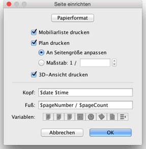
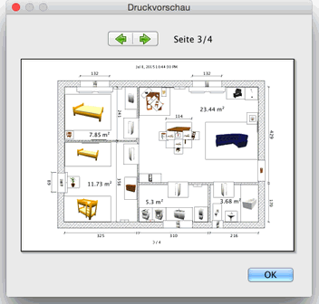

| Drucken einer Wohnung | |||
Um eine Wohnung zu drucken, wählen Sie Datei > Drucken.... Standardmäßig druckt SweetHome3D die Möbelliste, den Plan und die derzeitige 3D-Ansicht
in der Standard-Papiergröße, Ränder und Ausrichtung.  Im Seite einrichten Dialog können Sie nun die Papiergröße und Ausrichtung anpassen, indem Sie auf Papierformat klicken. Sie können außerdem auswählen, ob die Möbelliste der Plan und die 3D-Ansicht einer Wohnung gedruckt werden soll oder nicht. Um eine Druckvorschau Ihrer Einstellungen zu bekommen, wählen Sie Datei > Druckvorschau....  Im Druckvorschau-Fesnter sehen Sie, wie eine Wohnung gedruckt werden würde. Um die vorgeschaute Seite zu ändern, klicken Sie auf die Pfeile oben am Fenster oder drücken Sie die Pfeiltasten. |
|